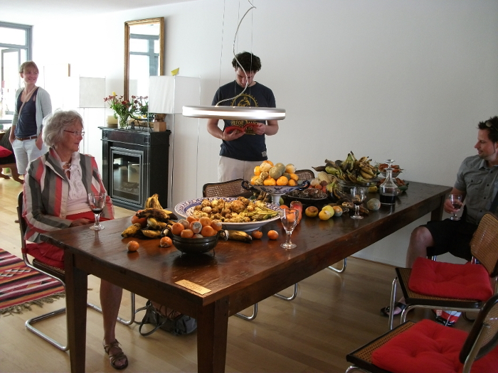
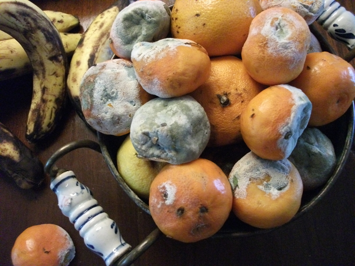

STILL LIFE


KuKa Rotterdam is an art route for contemporary art and visual culture on the North Island in
Rotterdam with a special interest in situational art. Unlike the (Dutch) mainstream art route, where the emphasis is usually on the presentation of existing works of art studio or gallery spaces, the works will be displayed in the home and or bedrooms (private rooms) of residents of the North Island. The work shown is location specific and occurs in the circumstances, a collaboration between artist, organization, location and its occupant(s). Basically Kuka is best to be seen in line with the Chambre d’Amis that was organized by Jan Hoet in Ghent in 1986.
“STILL LIFE”, installation/ happening with rotten vegetables and fruits, wooden table, chairs, glasses and wine.
2011